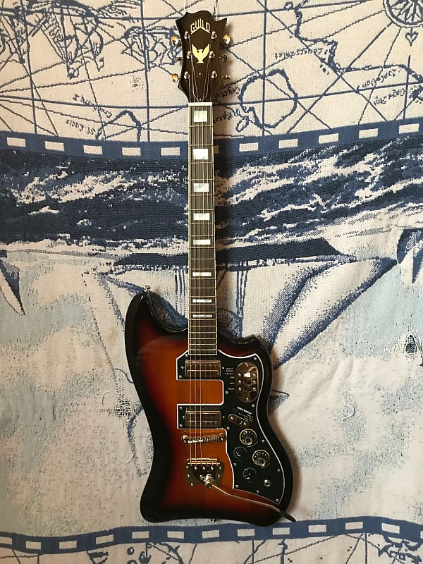

Really nice T-bird reissue. Great grain pattern and finish all the way up the neck. Vintage inspired dual Guild LB-1 Little Bucker pickups plus controls for a very wide variety of tones make this a real workhorse.
Upgraded with cloth push-back wire and CTS pots. Helps keep the noise down and improves the tone.
This particular one has had a full fret dress, and is playing very nicely with low action and a striaght neck.
$944.00